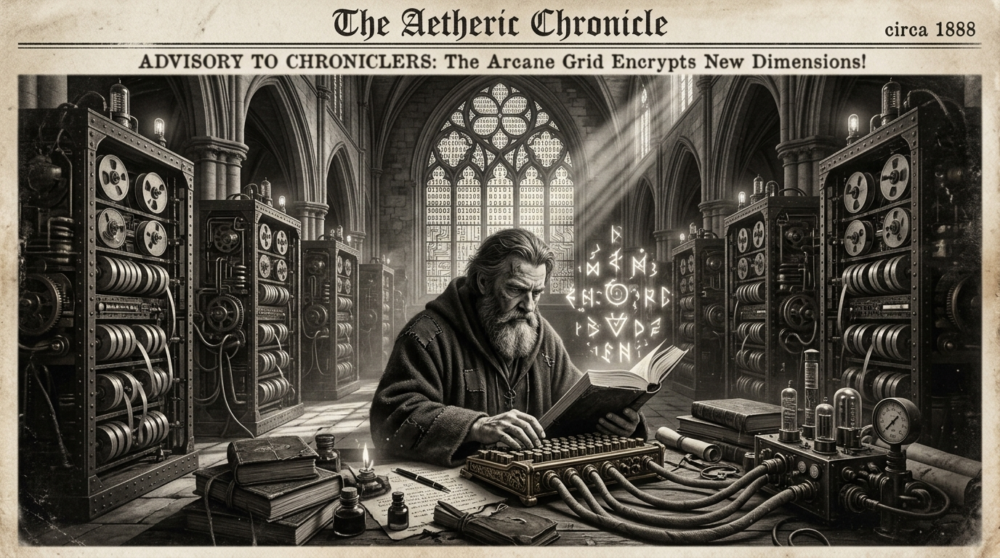

Morning Edition
6:00 AM CSTFinance & Markets
Oil Prices Jump as US-Iran Standoff Keeps Strait of Hormuz in Limbo
Oil prices surged and stocks traded mixed as tensions between the US and Iran over the Strait of Hormuz continued to rattle global markets. The critical shipping chokepoint remains a flashpoint, with energy traders pricing in elevated risk premiums.
— Source: ABC News / Google News, April 20, 2026Global Dealmaking Trends Show Resurgence in 2026
J.P. Morgan reports a renewed appetite for M&A activity across sectors, with cross-border deals and technology acquisitions leading the charge. Private equity firms are sitting on record dry powder and beginning to deploy.
— Source: J.P. Morgan, April 15, 2026Top 10 AI Cryptocurrencies Gaining Institutional Attention
Forbes highlights the convergence of artificial intelligence and blockchain, spotlighting tokens that are attracting serious institutional capital as the AI-crypto narrative continues to dominate venture funding in 2026.
— Source: Forbes, April 14, 2026World & US
Trump Says Iran Negotiations to Resume in Pakistan on Monday
Negotiations between the US and Iran are set to resume, with Trump calling recent conversations "very good" but maintaining the US won't be "blackmailed." The world watches as diplomatic channels remain active amid the Strait of Hormuz standoff.
— Source: ITVX / BBC News, April 20, 2026'Reality Won't Comply' — The Week on Shifting Political Currents
The Week examines how political expectations continue to clash with ground-level realities across multiple fronts, from trade policy to domestic governance, as the administration navigates an increasingly complex landscape.
— Source: The Week, April 17, 2026
The Monday Oracle: A Wizard Compiles Ancient Runes Beneath Cathedral Servers.
"Sagittarius, Monday arrives with a gust of forward motion. Your communication channels are wide open today—friends, partners, collaborators all hear you clearly. As a Rat-born Archer, your natural charm is amplified tenfold. If you've been waiting for the right moment to pitch, propose, or push that pull request… this is it. The code you ship today has staying power. Don't overthink it. Your instincts are sharper than your linter."— Monday's Developer Chronicle
Sagittarius Horoscope
Communication with friends and partners should be clear, open, honest, and supportive today, Archer. Camaraderie flows freely, and affection is shown without restraint. If you're involved but not yet committed, a declaration of love or desire to move things forward could be in the wind. At the very least, expect some genuine compliments! Your Rat-born resourcefulness turns every conversation into an opportunity. Lucky numbers: 3, 14, 27. Lucky color: Electric Blue. ⚡
— Source: Horoscope.com, April 20, 2026Tech & AI Highlights
-
AI-Crypto Convergence Dominates 2026 Venture Landscape
AI companies captured 80% of global venture funding in early 2026. Crypto firms are pivoting hard toward AI integration, and institutional investors are treating the intersection as the decade's defining trade.
— Source: CoinDesk / Forbes, April 2026 -
NIST "Any Wavelength" Lasers Open New Computing Frontiers
NIST researchers unveiled photonic circuit lasers capable of emitting any wavelength—a breakthrough with implications for quantum computing, sensing, and next-gen telecommunications infrastructure.
— Source: NIST / Hacker News, April 2026 -
Robots Compete Alongside Humans in Beijing Half Marathon
Humanoid robots ran a full half marathon beside human competitors in Beijing. The winning machine showcased dramatic advances in bipedal locomotion and real-time terrain adaptation.
— Source: BBC News, April 2026
Markets Snapshot
- Dow Jones: 49,447 (Fri close)
- S&P 500: 7,126 (Fri close)
- Nasdaq: 24,468 (Fri close)
- Oil: Surging on Hormuz tensions
- Bitcoin: ~$78,000
Active Reminders
- Build Oomi iOS and Android app
- Plaid Integration Research
- Connect Nemu to Notion
- Research VPN/proxy services
- Create security OpenClaw bot